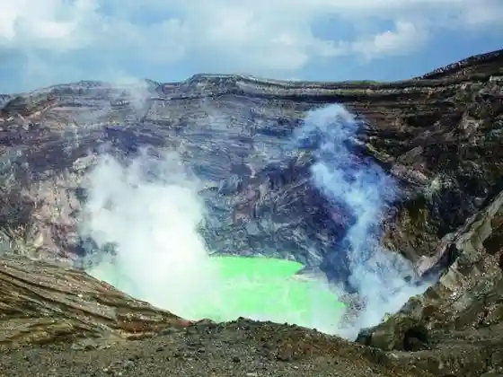
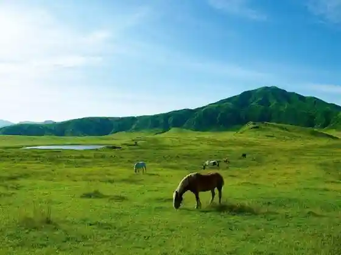
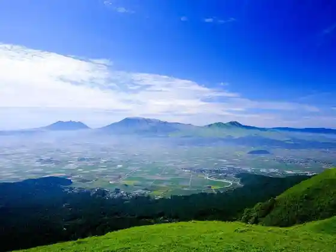
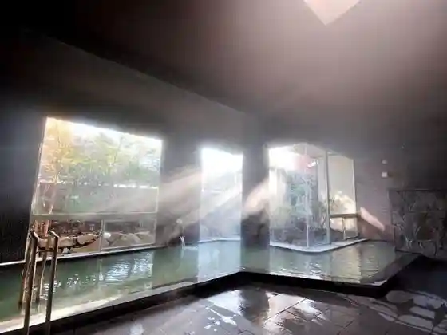

Aso Chugaku Kako
Aso, Kumamoto · 0967-34-1600 · Official / source link

Kusasenrigahama
Aso, Kumamoto · 0967-34-1600 · Official / source link

Taikan Mine
Aso, Kumamoto · 0967-34-1600 · Official / source link

Aso Shrine
Aso, Kumamoto · 0967-22-0064 · Official / source link
Uchimaki Onsen
Aso, Kumamoto · 0967-32-3330 · Official / source link

Azeria 21
Aso, Kumamoto · 0967-22-5311 · Official / source link
Furonteiahosugurupu Eru Pateio Ranch
Aso, Kumamoto · 0967-22-3861 · Official / source link
Roadside Station Aso
Aso, Kumamoto · 0967-35-5088 · Official / source link
Roadside Station Namino Kagura En
Aso, Kumamoto · 0967-24-2331 · Official / source link
Dai Aso
Aso, Kumamoto · 0967-32-0157 · Official / source link
Aso Uchimaki Onsen So Yamago
Aso, Kumamoto · 0967-32-0515 · Official / source link
Aso Uchimaki Onsen Yu Jun Tsui So (Yumeoiso)
Aso, Kumamoto · 0967-32-0622 · Official / source link
Yu no Yado Irifune
Aso, Kumamoto · 0967-32-0781 · Official / source link
Shamburu Dotto Arumu Forest
Aso, Kumamoto · 0967-32-4500 · Official / source link
Aso no Ryoshuku Taka no Sho
Aso, Kumamoto · 0967-32-5880 · Official / source link
Onjuku Ogasawara
Aso, Kumamoto · 0967-34-2000 · Official / source link
no no Hana no Yado Aso no Shiki
Aso, Kumamoto · 0967-22-3618 · Official / source link
Aso Kadorii Dominion
Aso, Kumamoto · 0967-34-2020 · Official / source link
Aso Yamagami Ittai
Aso, Kumamoto · 0967-22-3174 · Official / source link
Niju Toge
Aso, Kumamoto · 0967-34-1600 · Official / source link
San Shrine
Aso, Kumamoto · 0967-34-1600 · Official / source link
Myogyo Tera
Aso, Kumamoto · 0967-32-1960 · Official / source link
Kuninomiyatsuko Shrine
Aso, Kumamoto · 0967-22-4077 · Official / source link
Aso Kazan Museum
Aso, Kumamoto · 0967-34-2111 · Official / source link
Ue Ogura Burial Mound Shita Mikura Burial Mound
Aso, Kumamoto · 0967-22-3229 · Official / source link
Aso Shrine Sando
Aso, Kumamoto · 0967-22-0064 · Official / source link
Nakae Iwato Kagura
Aso, Kumamoto · 0967-22-3174 · Official / source link
Aso Ichi no Miya Furutsu Village
Aso, Kumamoto · 0967-22-2167 · Official / source link
Bochu Yaeijo
Aso, Kumamoto · 0967-34-0351 · Official / source link
Kodai no Sato Kyanpu Village
Aso, Kumamoto · 0967-22-5100 · Official / source link
Aso Neicha Land
Aso, Kumamoto · 0967-32-4196 · Official / source link
Aso Kusasenri Joba Club
Aso, Kumamoto · Official / source link
Nami no Highlands Yasuragi Koryu Kan
Aso, Kumamoto · 0967-23-0555 · Official / source link
Kome Tsuka
Aso, Kumamoto · 0967-34-1600 · Official / source link
Mizu Moto Meguri Monzen Town Sansaku
Aso, Kumamoto · 0967-22-8181 · Official / source link
Fuku no Shinchi Kura Mikoto
Aso, Kumamoto · 0967-34-1600 · Official / source link
Kabuto Iwa Tembo Tokoro
Aso, Kumamoto · 0967-32-1910 · Official / source link
Suna Senrigahama
Aso, Kumamoto · 0967-34-1600 · Official / source link
Kine Shima Gaku (Kishimadake)
Aso, Kumamoto · Official / source link
Hakoishi Toge
Aso, Kumamoto · Official / source link
Kusasenri Tembo Tokoro
Aso, Kumamoto · 0967-34-1600 · Official / source link
Kajitsu no Kuni COUPLES
Aso, Kumamoto · 0967-34-0100 · Official / source link
Dogguparesu Resort Aso Otohime
Aso, Kumamoto · 0967-32-3332 · Official / source link
Kusasenri no Juhyo
Aso, Kumamoto · Official / source link
Koga Falls
Aso, Kumamoto · 0967-22-3174 · Official / source link
Sensui Kyo (Sensuikyo)
Aso, Kumamoto · 0967-34-1600 · Official / source link
ASO BASE BACKPACKERS
Aso, Kumamoto · 0967-34-0408 · Official / source link
Tabi no Yado Aso no Yu
Aso, Kumamoto · 0967-32-1521 · Official / source link
Shiki Sai Ichi no Miya
Aso, Kumamoto · 0967-35-4155 · Official / source link
Tago Yama Tembo Tokoro (Sorafune no Sambashi)
Aso, Kumamoto · 0967-22-3174 · Official / source link
etu
Aso, Kumamoto · 090-3665-8290 · Official / source link
Aso Saikuru & Kuraimingubesu CLAMP (Kuranpu)
Aso, Kumamoto · 0967-32-0928 · Official / source link
ASO FRANPING VILLAGE (Aso Furanpingubirejji)
Aso, Kumamoto · 0967-32-5565 · Official / source link
Asokyan
Aso, Kumamoto · 080-8386-0340 · Official / source link
Usoppu Zo
Aso, Kumamoto · 0967-22-3174 · Official / source link
Hi no Kuni Dogguran Oto Campground
Aso, Kumamoto · Official / source link
Unkai Kusurishi Onsen
Aso, Kumamoto · 0967-32-0116 · Official / source link
Takara Yu
Aso, Kumamoto · 0967-32-1563 · Official / source link
Dai Aso Onsen
Aso, Kumamoto · 0967-32-0157 · Official / source link
Mingei Workshop Tesseki
Aso, Kumamoto · 0967-22-3543 · Official / source link
Nihyaku Toka no Kinenhi
Aso, Kumamoto · 0967-22-3174 · Official / source link
UnderVillageFarm| Shita Village Budo Sono
Aso, Kumamoto · Official / source link